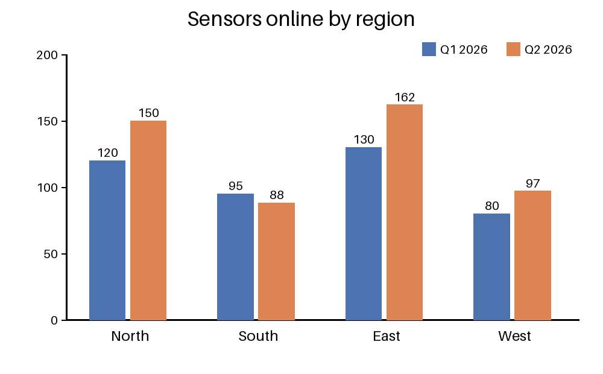

Setting up a garden moisture sensor

A soil moisture sensor tells you when to water. This guide shows how to wire one to a small board, calibrate it and read values every ten minutes.
What you need
- One capacitive soil moisture sensor
- A microcontroller board with an analogue input
- Three jumper wires and a USB cable
Calibration values
| Soil state | Raw reading | Moisture |
|---|---|---|
| Dry air | 3,100 | 0% |
| Damp soil | 2,050 | 48% |
| Glass of water | 1,250 | 100% |
Reading the sensor
import time
DRY, WET = 3100, 1250
def moisture(raw):
return round(100 * (DRY - raw) / (DRY - WET))
while True:
print(moisture(read_adc()))
time.sleep(600)Water the bed when the value stays below 20% for an hour.